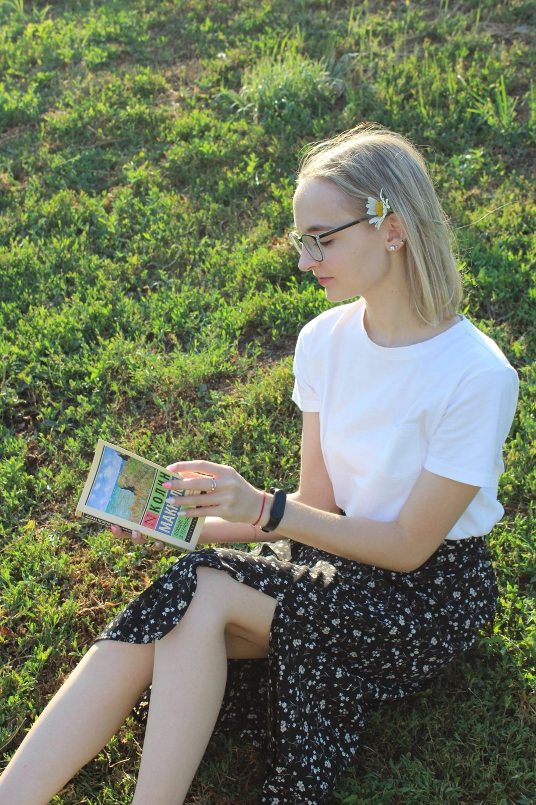

Добро пожаловать в мой книжный мир!

Привет! Меня зовут Алиса, и я очень люблю читать книги. Для меня чтение — это возможность путешествовать по удивительным мирам, знакомиться с интересными героями и проживать сотни разных историй.
Я создала этот блог, чтобы делиться своими впечатлениями о прочитанном, рассказывать о любимых произведениях и находить людей, которые так же сильно любят книги.
Надеюсь, здесь ты найдёшь вдохновение для следующего литературного путешествия!
Что ты найдёшь в моём блоге?
- Отзывы на прочитанные книги
- Мои любимые произведения и авторов
- Книжные рекомендации
- Личные впечатления и заметки
Давай знакомиться с книгами!
Загляни на мою книжную полку, чтобы узнать, какие произведения я читаю.
А в разделе «Мои отзывы» я буду делиться своими мыслями о книгах.
Полезные книжные ресурсы
Найти интересные произведения и отзывы читателей можно на сайте LiveLib.